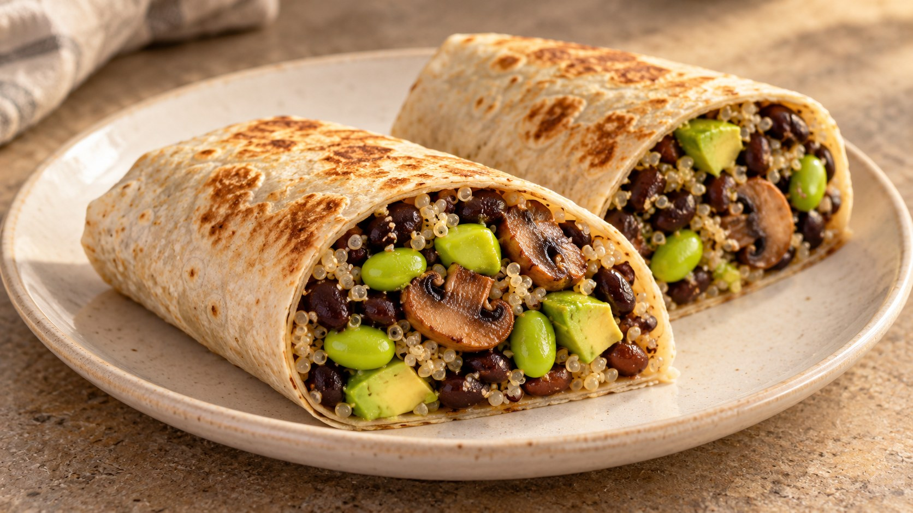

Burrito de frijoles negros

Descargar receta en PDF · A4Más de Envueltos y bocados
Ingredientes
- 1 lata de frijoles negros guisados (410 g, con salsa)
- 50 g de quinoa en seco
- 80-100 g de edamame desgranado
- 100 g de champiñones
- 1 aguacate mediano
- 2 tortillas grandes de trigo (unos 30 cm)
- 1 cdta. de aceite de oliva virgen extra
- 1-2 cdtas. de zumo de lima
- Comino molido (opcional, después de probar)
- 2 cdas. de pico de gallo (opcional, escurrido)
Preparación
Enjuaga la quinoa en un colador fino y cuécela según el envase. Déjala reposar tapada unos minutos y suelta los granos con un tenedor. Mientras, cocina el edamame según el envase y escúrrelo bien; la cantidad indicada es sin vainas.
Limpia los champiñones con un paño húmedo o enjuágalos brevemente y sécalos bien. Córtalos y saltéalos con el aceite a fuego medio-alto hasta que pierdan el agua y empiecen a dorarse. Si ya están cocinados, omite el aceite y añádelos en el siguiente paso.
Vierte la lata completa en la sartén, sin escurrir ni enjuagar. Cocina destapado a fuego medio-bajo, removiendo, hasta espesar la salsa. No hace falta otro sofrito. Si usas champiñones ya cocinados, añádelos ahora y caliéntalos bien.
Añade el edamame y la quinoa cocida. Mezcla y calienta brevemente. Apaga el fuego, añade la lima y prueba. Pon una pizca de comino solo si te apetece reforzar ese sabor. No añadas sal de entrada.
Calienta ligeramente las tortillas para que sean flexibles. Reparte el relleno formando una franja un poco por debajo del centro y dejando margen alrededor. Añade el aguacate en dados y el pico de gallo escurrido, si lo usas. No sobrecargues las tortillas.
Imágenes ilustrativas generadas con IA.
Coloca los burritos en una sartén antiadherente sin aceite, primero con el cierre hacia abajo. Dora a fuego medio hasta que mantengan la forma y estén ligeramente tostados.
Claves
Relleno espeso, aguacate al montar y tortillas sin sobrecargar. Sin sal añadida de entrada.